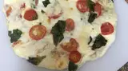

SKillet PIZZA!!!

Description
Issa pizza with the crust made from cheese. ion about this one, it ain't gonna look right when you cook it.
ingredients
- 1 1/2 cups of shredded part-skim mozzarella
- 5 sliced cherry tomatoes
- 2 tablespons of torn FRESH basil leaves
- 4 small moz balls
Directions
- cook mozzeralla in 10-inch skillet for 2-3 minutes
- arrange other ingredents around the cheese leaving room for a crust to form
- remove from heat and attempt to cut into eight slices. Let cook for a little while.